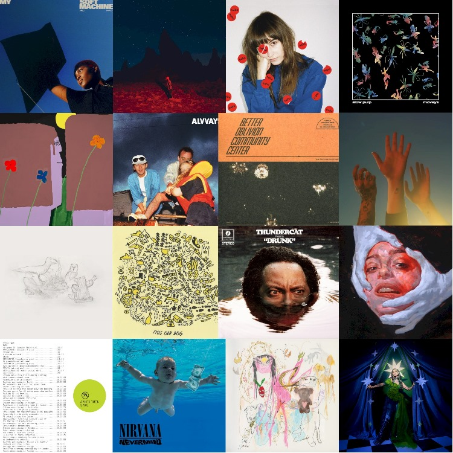
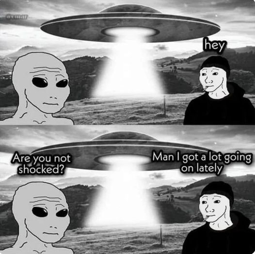
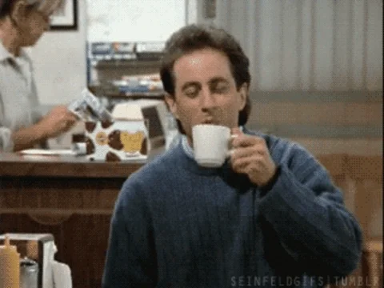

rip my laptop :(
you were good to me. f*** the guy that stole it.
i'll post whatever i want mom!
you were good to me. f*** the guy that stole it.
A lot has happened, but nothing has changed...
i just need change, i just need change, i just need change, i just need change. i'm stuck in a loop, i'm stuck in a loop, i'm stuck in a loop. i want out, i want out, i want out, i want out. i'm tired.
i actually don't mind that the pages of this site have nothing in common, but i look at some of the beautifully curated aesthetics of some other neocitizens sites and get a bit jealous. but i guess that's just who i am in general. i crave novelty and need things to feel fresh and new. so i like starting a new page from scratch.
new year, new problems. i feel mostly comfortable tackling them this time around. still deciding whether to set new years resolutions or see how it goes. it'll be my first year out of uni so it's going to be some big changes.
in other news here is my top albums of 2023.
under so much stress rn, taking a break to just chill. updating my site. listening to 70s japanese jazz. vibin'
it's been a rough couple weeks, and i'm really frustrated/feeling down but at least i have some hope to look forward to being done with university. then maybe i can get a life again.
me rn: 
i've hit a 170 day streak on duolingo, but i kinda just do one lesson a day. hopefully when i get time i'll be able to do more. it's more than nothing i guess.
i'm so stressed but i can't relax because the tension is the only thing holding me together. jk jk, but yeah i'm so stressed, and i can't relax. Uni things are getting hectic and at the same time i'm trying to find a job. these interviews are so complicated. like, i just want an entry level job, but they have like 4 stage interviews and reports that i have to submit for the interviews and tests i have to do for the interviews. it's crazy.
getting back into updating this site has made me really happy, I've been thinking about how I spend my time on the internet. I've gone both ways in the past. Absolute off-grid no social media whatsoever, and I've tried to cultivate a presence on the different platforms like Instagram, Facebook, Reddit, etc. Now I think I'm just going to decide what I actually like.
I've really been enjoying making 88x31 buttons for my site. I've made a deeprock galactic one, and a personal one. I've been using libresprite to make them. :)
I don't really log in here much anymore, getting my degree soon and it feels good.
I noticed quite a few people have starred my groff guide I haven't written anything using groff in a while but i might get back into it and clean that up. (or not xD)
been a hot minute since I wrote here, COVID is pretty much over now and things are back to 'normal', I have a mastodon account now where I post small thoughts and stuff so this site doesn't get too many updates any more except when I want to clean things up or add a page.
I fixed all the broken images on my moodboard by not hotlinking them, now they will only disappear when this site disappears :)
"Oh of course, you were on twitter for longer than an hour, what do you expect? Whenever I want to use the internet, I set up two timers to make sure I go no longer than 20 minutes, and I keep a post-it on my computer that says 'You are not broken'. It's ridiculous that you don't!"
just a little excerpt from a series the future will be technical over on coolguy.website.
added a moodboard to the website. basically a lofi pinterest clone. i tried to use only named html colors like lavender, peru, aliceblue, etc.
i think i would rather make some css with complicated selectors than add tons of divs with classes and id's into my html. if the html is simple it makes managing the content easier. complicated css is only a problem when you want to change how the content looks which is (hopefully) less often than changing/updating the content
i am like a hoarder of urls. i just keep copying and pasting them into text files and organizing and saving them for later. but i think i spend more time searching for links to save than i do reading my saved links.
sometimes i wonder "what's the point of caring about all this privacy, federation, decentralization, anti-monopoly stuff?"
very few people i know in real life care at all and i often feel disconnected from friends because i'm not on instagram or tik tok or whatever. it also doesn't seem like my efforts are going to do anything to the "big tech" situation.
maybe i can carry on caring about this stuff just because it is cool and not for any deeper meaning. i'm not sure if i would be able to go back to using big tech's services knowing how they try to manipulate users and profit off of people's personal information.
at least having my own website is fun!
found a cool song.
last.fm is exactly what i was missing in my music discovery experience, its a shame i couldn't manage to save my old account but maybe that's a good thing? i listen to very different music now than i did back when i was scrobbling in high school.
currently this site is hosted through github pages, but i'm starting to think that my needs are growing beyond a simple static site. I would like to add a place to hold comments like a guestbook and it would be nice to be able to have more dynamic pages or host some other stuff like an image board. right now there's not really that much content but i like to experiment.
moved my linux rices all to one repository and moved all my startpages to one repository.
> feelsgoodman
i can barely decide what to eat or what to watch.
sometimes i just feel like im looking over my own shoulder and just observing life, like am living life in 3rd person.
best survival crafting game i've ever played! the bosses and raids keep you motivated and on your toes, and the base building is superb!
how are concerts so cool?! this clip from 2008 just transported me to a completely different place. also how is the audio so damn good?
*commercial starts playing* me: runs to bathroom me: opens door *doom eternal music plays*
do you ever just cut a slice of bread in half and make half a sandwich?
at first i thought this game looked bad and overly complicated, but decided to give it a try. man, am i hooked! i've clocked in over 30 hours in my first week with only 2 colonies.
i'm having quite a lot of fun, especially considering that i haven't really been able to enjoy video games/movies/music in a while. it's complicated but you pick it all up quite naturally as you go along and i haven't yet felt overwhelmed the experience reminds me very much of being glued to the glowing crt playing age of empires as a kid.